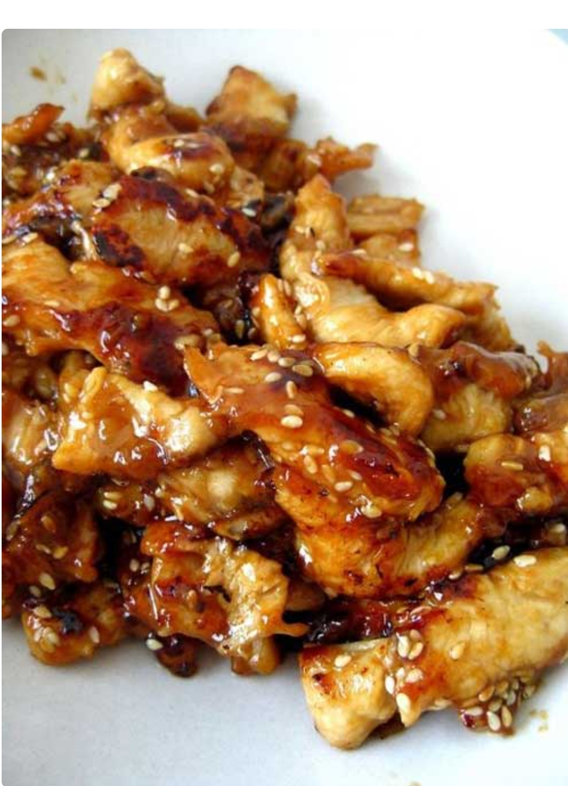
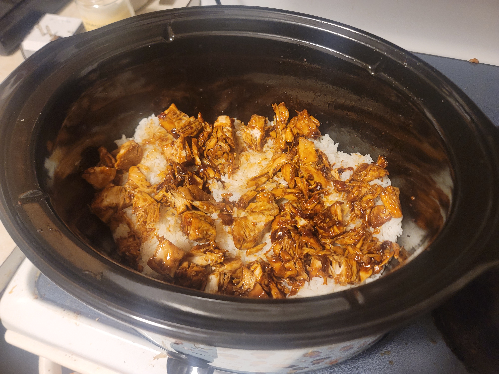

Crockpot Teriyaki Chicken

Delight your tastebuds and impress your friends with this magnificent but easy rendition of a classic dish!
Ingredients
- 2 lbs boneless chicken breasts
- 1/2 cup brown sugar
- 1 cup soy sauce
- 4 tablespoons cider vinegar
- 1 teaspoon ground ginger
- 2 clove minced garlic
- 4 teaspoons cornstarch
- 4 teaspoons water
- A whole bunch of rice (use your discretion)
Preparation
- Place chicken in crockpot.
- In a medium bowl, combine the:
- sugar
- soy sauce
- vinegar
- ginger
- garlic
- pepper
- Pour the mixture over the chicken and cook on low for 4-5 hours.
- Remove chicken from slow cooker, chop into cubes, and set aside
- Strain the cooking liquid into a skillet and bring to a boil.
- In a small bowl, whisk the cornstarch and water until combined.
- Slowly add cornstarch mixture to the boiling liquid and reduce to a simmer. Allow sauce to thicken for 2-3 minutes and toss the chicken back in.
- Coat chicken with sauce and let it heat through.
- Serve and enjoy!
Personal attempts:
1. 